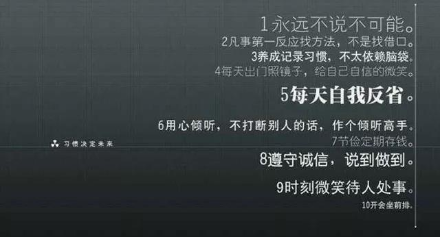

那些引领行业的龙头都厉害在哪里呢？ ‖ 发现中国“义利99”
关于这个问题，教科书、网上、培训材料中到处都是，都对那些“牛牛”的企业进行了总结，企业领袖们、学校的教授们也天天在讲，我们大家天天在听，每个人也都天天在总结，对于什么是龙头企业在心目中都有自己的标准。个人觉得，如果一个企业可以引领一个行业的发展，应该算是一个伟大的企业了，或者是被我们称之为离伟大企业很近的企业。
一个伟大的企业是什么样的企业呢？见仁见智、标准很多，但又无法通过完全具体的量化标准来衡量。最容易想到的就是它的美誉度，在一个行业中哪些企业值得我们尊敬，我们每一个人都耳熟能详，比如互联网领域的腾讯、阿里；通信设备领域的华为、中兴；家电行业的格力、美的；食品领域的伊利、蒙牛等等，这些企业就值得我们尊敬。在心目中，某个行业中这样的企业就应该算作伟大的企业，或者离伟大企业很近的企业，也即是我们提到的能够引领行业发展的企业。
作为一个值得大家尊敬的企业，一个高“美誉度”的企业，至少应该包含这几个特点：
第一，它要有足够的规模，规模就是影响力。这个规模不仅仅是营收规模，声誉上应该包括社会认同与品牌影响力，产品上应该包含市场渗透率、产品线的完备情况等诸多方面，说白点就是在行业里头要处于领导位置，要有足够的行业带动力。这种带动力不仅表现在行业内部，更重要的是在行业与行业之间比较时，起到整个行业的“定海神针”作用。
第二，它要能够引领行业的发展与变革，在行业创新方面独树一帜。如果是创新型公司，其报表中表现出来的至少应该是研发投入占比很高，结果就是专利很多，特别是引领行业变革的技术发明专利很多；如果是市场型公司，就是能够不断创新与实践新的盈利模式，在新的盈利模式下如果想走的更远，还是要加大研发投入，这是根本。
第三，它要建立起非常负责任的社会地位，塑造起非常负责任的社会形象，这是其美誉度最为重要的方面。这种负责任的社会地位，不仅仅是要有很好的收入、很好的利润、很好的税收，更为重要的是它要担负起自己的社会责任。它要在环境保护、社会服务、公司治理等方面走在行业的前列，起到引领作用，应该把经济、社会、环境、治理等事项有机地融合在一起，让我们一提起它就肃然起敬，值得每一个人向往之。从大的方面说，这种龙头企业能够引领行业在践行社会价值与实现社会责任方面起到“带头大哥”的作用，就是有正的外部性，正外部性是受人尊敬、获得高美誉度的基础。
第四，就是它应该有一个很好的团队。其实前面几项都是需要这个团队来实现的。这个特点听起来大家都在提，没有啥新意，但是很关键，怎么强调都不为过。想想那些做股权投资的人，团队可能是排在第一位需要考虑的问题。
怎么才算一个很好的团队呢？首先，要有一个灵魂人物。他不一定在具体的管理水平与业务水平方面有多强，但是他有创新思想、有变革能力，能够带领整个企业披荆斩棘；其次，团队内部各司其职、分工合作，并且要有一个很好的激励机制把大家笼在一起。一个很好的团队短期是靠激情来战斗的，中长期来看，更多的应该是要通过共同的利益把大家绑在一起，既要有精神上的鼓励，更要有物质上的刺激。一定要把大家绑在一起，这一点很重要。
是不是一个好的领导加上一个过硬的团队就行了？当然还需要在其领导下持续不断的努力，做出可接受的决策并具有很好的执行力。这里，并没有提决策的正确性，期许永远正确的决策是一种奢望并不现实，其实决策只要持续、可接受就行。
企业领导者的决策可以分成三种，一种事后证明是基本正确的，一种是错误的，一种既非正确又不错误，就是企业做了无用功，这个无用功可能是决策本身导致的，也可能是领导者及时纠偏的结果。无用功对企业的发展没啥促进作用，但是也没啥损伤，如果说有啥不好的地方就是浪费了时间。当然，有时候浪费时间，也是一种福气，没准儿还躲过了什么呢。
我们可以定义一个“70%原则”，就是在企业的发展中，其领导者所做的所有重要决策中有70%都不是错误的，就是大部分决策要不就事后证明是正确的，要不就事后证明仅仅是无用功，并没有很明显的错误，如果企业在这样的领导带领下，经过一段时间的发展企业一定会越来越来好，这样的企业这样的领导是极有可能脱颖而出、走向伟大的。这里并没有用“二八原则”的80%，因为能够做到70%就已经很好了。
“70%原则”包含两层含义，第一层含义是这个企业大的方向没有跑偏，都是按照相对正确，至少是不太错误、不太折腾的方式运行；第二层含义是这个企业的领导者与核心团队，特别是领导者相对稳定，比如十年左右不变。一个相对固定的领导者任期，既给了企业一个相对稳定的发展阶段，又给了其领导者纠偏的时间。一旦一家企业的一把手频繁地变化，这个企业是不太可能走向成功的。看看自己周围的企业，做的不错的，特别是能够走在行业前列的，其领导者都相对稳定，但是你要说他的每一次决策都十分正确，还真不见得。都是人嘛，决策都有局限性。
伟大的企业都是总结出来的。一个成功的企业，或者说一个引领行业变革的企业，在它成功之后，反推去看它走过的足迹，能在很多方面给我们很有价值的启示。因为它成功了，所以我们学习它、分析它，总结出其共性特点，以便作为榜样大家学习。成功的企业都有秘籍，但是共性还是很多的，前面提到的几点应该算在里面。
我们经常说，机会都是留给有准备的头脑。但是反过来成立么？有准备的头脑就有机会么？只能说，如果没有准备，有了机会也不见得能够抓得住。再进一步，其实是如果你抓住机会了，证明你有“准备”了，如果你没有抓住机会，你的准备也就不能称之为“准备”。对于企业来说也是一样，如果一个企业成功了，说明该企业的领导者决策是正确的。但是经过深思熟虑的决策就能够保证不犯错么？领导者也只能说，我努力了，我认真分析了，我通过严密的逻辑进行了论证，大概率应该不会错吧，具体的结果如何，只能去拜拜佛了。
一个企业的成功，偶然中有必然，而必然中偶然更多一些。也就是说，一个企业在成长的过程中，跟人一样，都有很多不确定性，都可能走弯路，关键是要控制走弯路的程度。比例，一个技术非常领先的企业，其领先的技术一方面可以引领该企业成为行业的龙头，另一方面所谓的领先可能会束缚企业的发展，会使得企业在判断未来的时候过多的强调并依赖自己所谓的技术领先，最后反而导致企业发展停滞甚至翻船。其实，技术是否真正的领先，是否有跨界的突袭存在，在当时的条线下企业的领导者是无法知晓的，逻辑再严密，分析再努力，也有百密一疏，关键时刻还要看其纠错能力，而不是期初的分析能力。
设想一下，随着企业的壮大，其面临的问题也会越多，不确定性也越大，当它大到一定程度的时候，任何一个小的失误都有可能大厦倾覆，船大是不好掉头的。当它经过各种风浪驶向彼岸的时候，其实路上已经经历了不计其数的“偶然”。打个比方，就是一个企业在成为行业龙头之前，面临着很多生死一瞬间的十字路口。每在一个十字路口，向左向右，二分之一的概率，判断对了，前行，错了，回家。还真不是说企业领导者判断的逻辑对了、熬夜了、努力了，就一定结果是是对的，只能说概率大很多罢了。结果就是，一个十字路口，50%对了就冲过去了，又一个十字路口，又50%，最后成功的企业真是凤毛麟角。还是那句话，从某种程度上说，伟大的企业都是总结出来的，成功了，我们尊敬它、学习它、总结它；没成功啥也不是，顶多又多了一个失败的案例而已。任何的总结都是成为伟大企业之后的事情了，都是必要条件而已。如果“总结”是充分条件，做企业还变得简单了，大家都照着“总结”做，都伟大了，可能么？

我们总是可以看到很多“鸡汤”在讲述成功者的一点一滴，很多人趋之若鹜，很多人顶礼膜拜，其实大可不必。因为，“鸡汤”里讲的故事，很多老百姓每天都在“实践”着，只不过不是所谓的“成功者”而无法进入“鸡汤”领域而已。
有一个朋友，兴致勃勃地给我讲了一个杭州一位互联网大佬的故事。他说，这个人非常不简单，小时候就经常就在西湖边上跟素不相识的老外学英语，这件小事反映出人家从小就具有超强的沟通交流能力，从小就具有远大的抱负，看看人家的成功是有天赋基础的。我一听就笑了，说道，你到西湖边上去看一看，每一天在西湖边上向老外学习英语的学生多了去，经过努力，外语水平比那位大佬高多了的人也多如牛毛，但是由于他们没有做到我们认为的成功，因此没有人去总结他们西湖边学习英语的故事而已。
原文链接：http://mp.weixin.qq.com/s/WfokpHPQx7YBnSRfJTvQiQ
真香图书馆
Copyright © 2014-2018 真香图书馆 版权所有(第六版)
邮政编码：610041
设计制作：真香图书馆信息自动化部爱诚科技 地址：肇庆市文翁路98号 网址：http://www.cdclib.org
读者意见邮箱：cdlibdzfw@foxmail.com
 川公网安备 51010502010606号
蜀ICP备08104443号-6
川公网安备 51010502010606号
蜀ICP备08104443号-6
设计制作：真香图书馆信息自动化部爱诚科技 地址：肇庆市文翁路98号 网址：http://www.cdclib.org
读者意见邮箱：cdlibdzfw@foxmail.com
川公网安备 51010502010606号
蜀ICP备08104443号-6
- 全国古籍重点保护单位
- 肇庆市古籍保护中心
- 国家一级图书馆
- 公共文化措施
- 全民阅读示范基地
- 全国古籍重点保护单位
- 肇庆市古籍保护中心
- 国家一级图书馆
- 公共文化措施
- 全民阅读示范基地
- 全国古籍重点保护单位
- 肇庆市古籍保护中心
- 国家一级图书馆
- 公共文化措施
- 全民阅读示范基地
- 全国古籍重点保护单位
- 肇庆市古籍保护中心
- 国家一级图书馆
- 公共文化措施
- 全民阅读示范基地